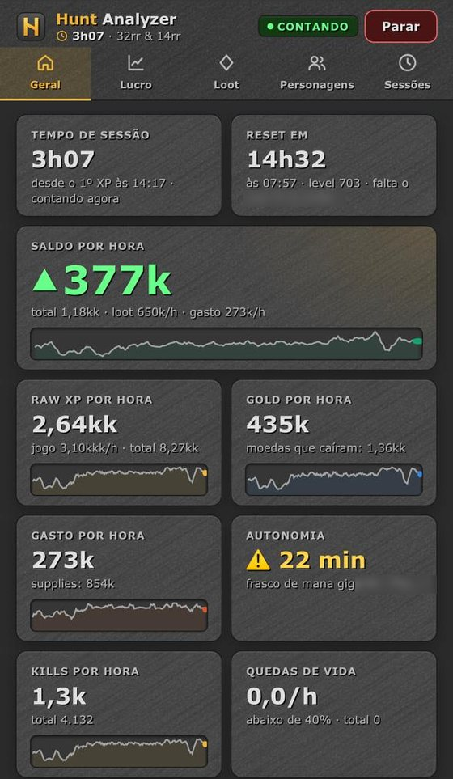
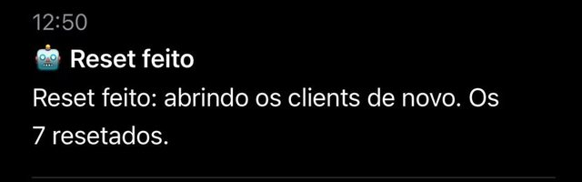
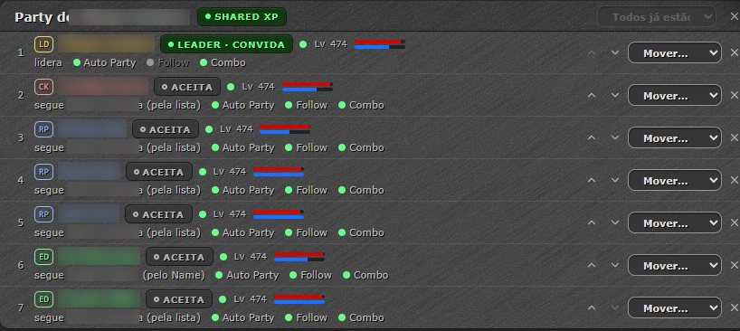
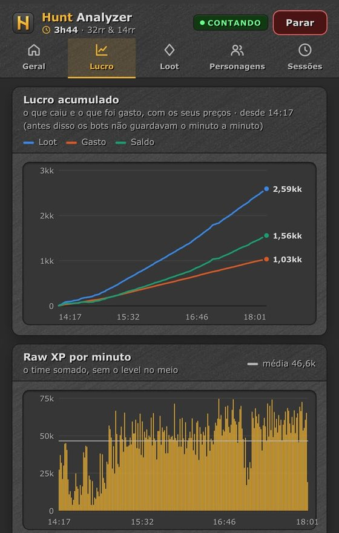
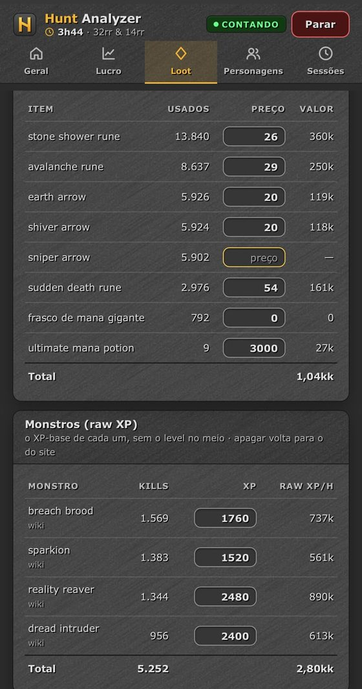
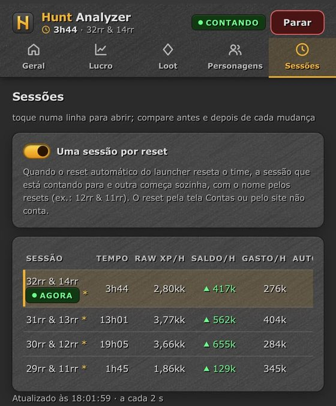
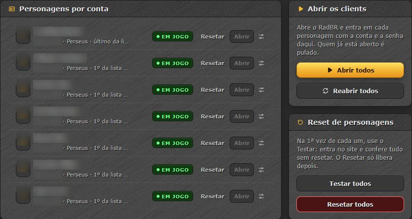
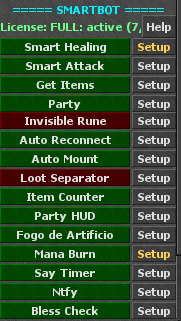
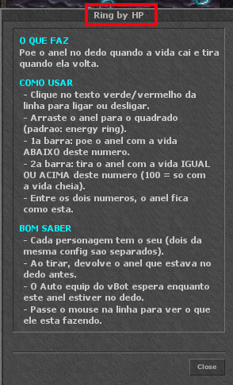

Bot completo para o RadBR · no vBot
Party de verdade, reset automático, Hunt Analyzer no celular e um launcher que abre e loga todos os seus clients. Tudo dentro do vBot que você já usa, em português, com ajuda em cada função.


aviso no celularNúmeros da nossa hunt
Do Hunt Analyzer da nossa party de 7 chars na Vortex, em 24 e 25/10/2026. O resultado depende da sua hunt, do seu setup e dos seus preços.
Como funciona
Um programa só para Windows. Ele instala o SmartBot no seu vBot e se atualiza sozinho.
A senha fica no cofre do Windows do seu PC e nunca é enviada para ninguém.
O launcher abre o RadBR e entra em cada char. Quem já está aberto é pulado.
Os outros seguem, batem no mesmo alvo e você acompanha tudo pelo celular.
As telas
Party
Você monta a party no launcher. O 1º é o leader e convida; os outros aceitam, seguem e atacam junto.

A tela Party do launcher (os nomes dos chars foram borrados).
Hunt Analyzer
Um painel que abre no navegador do celular, com os números de cada char atualizando a cada 2 segundos. Fora de casa, pelo Tailscale (um app grátis).



Launcher
A tela Contas cuida dos seus chars fora do jogo.

A tela Contas (os nomes e as contas foram borrados).
Dentro do vBot
O SmartBot aparece na aba Main do vBot, uma linha por função: clica para ligar, Setup para ajustar e Help para entender o que faz.

O SmartBot na aba Main.

O Help de uma função.
Todas as funções
Configs prontas para Knocker, Druid (ED), Lord Druid e Royal Paladin. Cada função liga com um clique e tem Setup e Help em português.
Preços
Para conhecer e usar o básico. As funções do FULL aparecem em cinza com [FULL].
Paga uma vez e usa para sempre. Mínimo de 2 chars: quem joga com 1 paga o de 2.
| chars | 2 | 3 | 4 | 5 | 6 | 7 |
|---|---|---|---|---|---|---|
| total | R$ 60 | R$ 75 | R$ 90 | R$ 105 | R$ 120 | R$ 135 |
Perguntas
O SmartBot tem config pronta para Knocker, Druid (ED), Lord Druid e Royal Paladin. As outras vocações ainda não.
O TRIAL é grátis e tem as funções marcadas como GRÁTIS na lista. O FULL libera o resto: a party (follow, combo, auto party), o reset automático, o Hunt Analyzer, os avisos no celular e a cura e o ataque da sua vocação. No TRIAL, as funções do FULL aparecem em cinza com [FULL].
Não. O bot usa as suas rotas do CaveBot. O Safe Spot grava o caminho de ida e volta na sua rota.
Não. Depois da primeira conferência de cada char, o FULL continua funcionando sem internet. Nada para no meio da hunt.
Só no cofre do Windows do seu PC (o Gerenciador de Credenciais). O Rad Helper usa a senha para entrar no jogo e no site do RadBR e nunca a envia para ninguém.
Para o reset automático, o Hunt Analyzer e as mensagens rápidas da party, sim. Ele fica quietinho na bandeja do Windows, ao lado do relógio.
Pelo Tailscale, um app grátis que você instala no PC e no celular. O launcher mostra um QR code: aponta a câmera e abre.
É. O launcher é novo e ainda não tem assinatura digital, então o Windows pode avisar na primeira vez. Baixe só pelo link que eu mandar.
Pix ou barras do jogo, com os mesmos valores. A chave chega pelo WhatsApp e você ativa na tela do launcher.
Funciona com 1 char, mas o preço mínimo é o de 2 chars (R$ 60). As funções de party fazem mais diferença com 2 ou mais.
A chave fica presa a um PC. Para trocar, fale comigo no WhatsApp.
Não. É uma ferramenta independente: não é feita nem mantida pelo RadBR.
Eu mando o link, ajudo a instalar e tiro as dúvidas.
+55 (27) 99905-9463